Dota 2 River mods
Custom river colors.
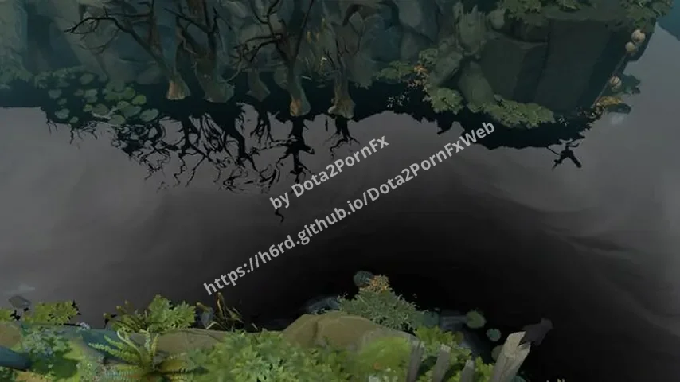
Black River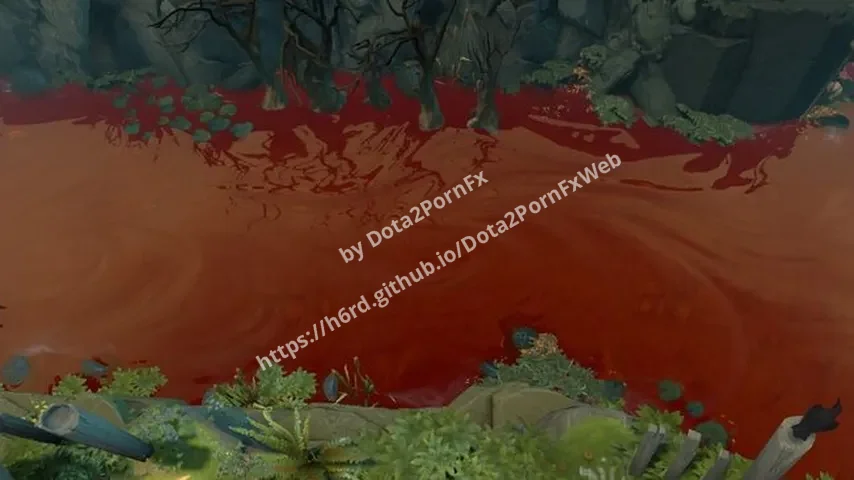
Blood River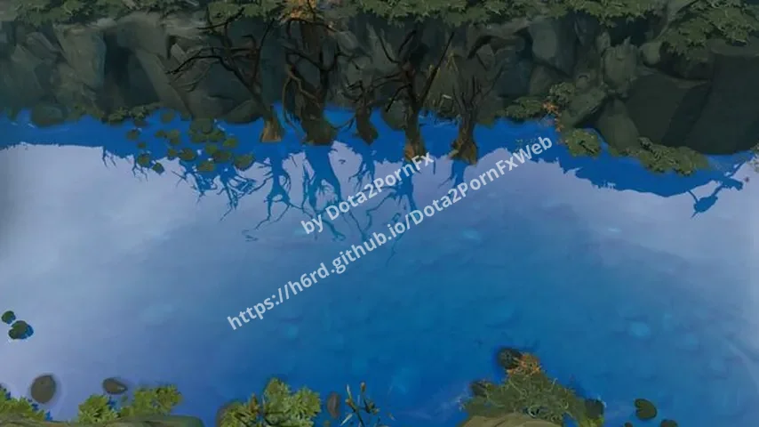
Blue River Boiling Blood River
Boiling Blood River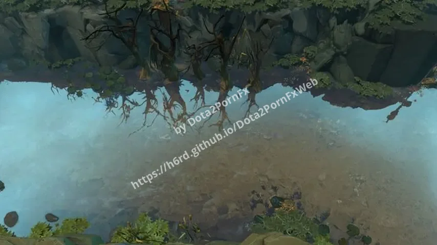
Boiling River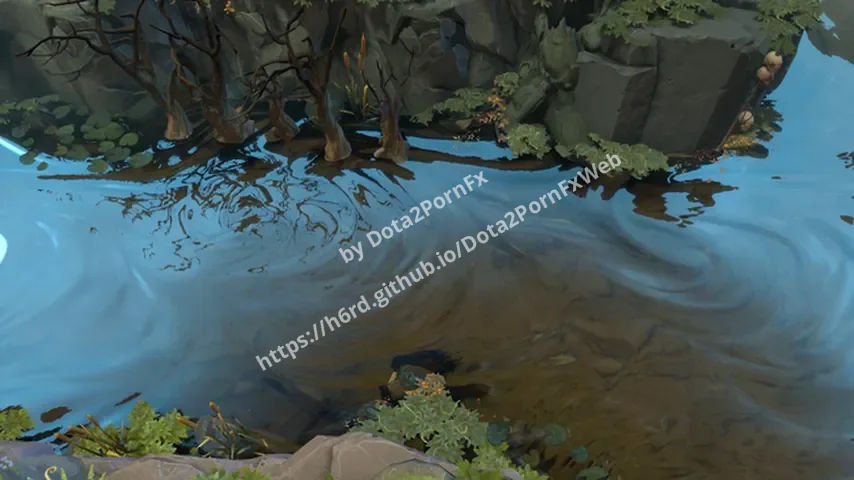
Chrome River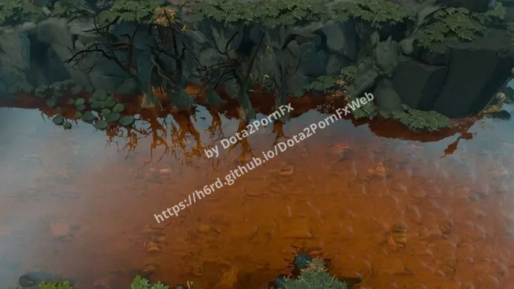
Cola River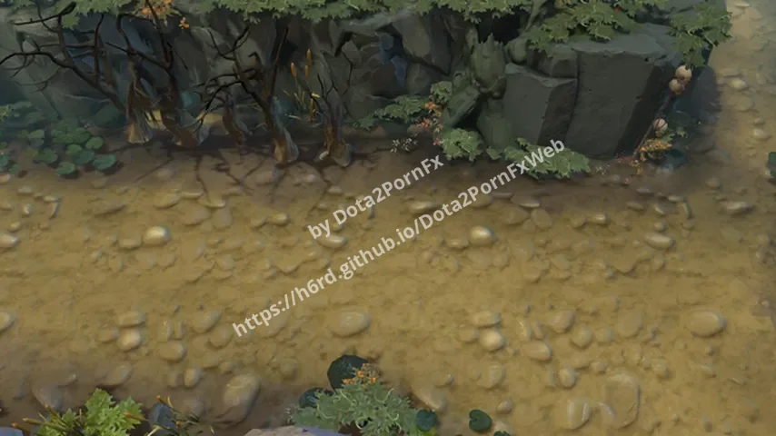
Dry River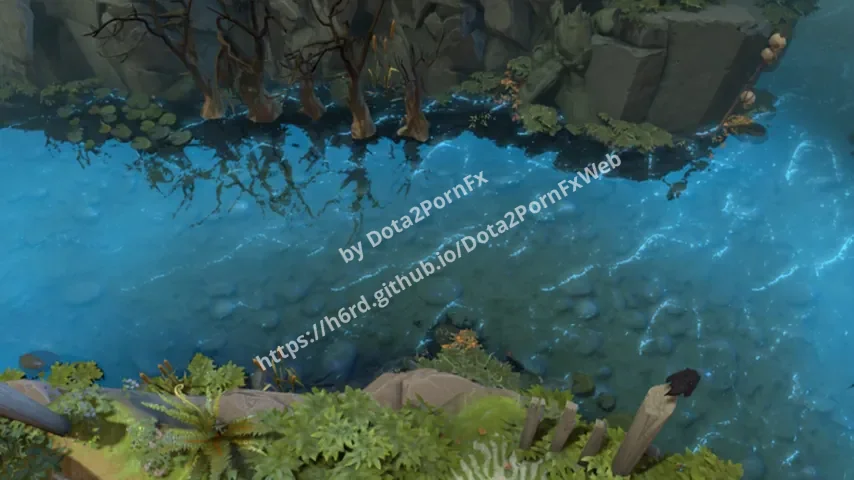
Electric River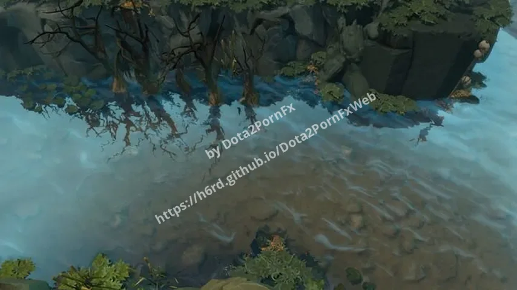
Frozen River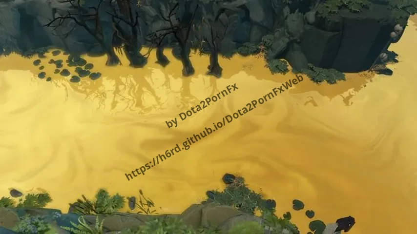
Gold River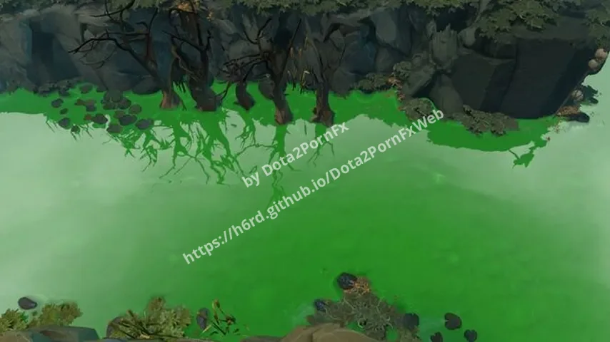
Green River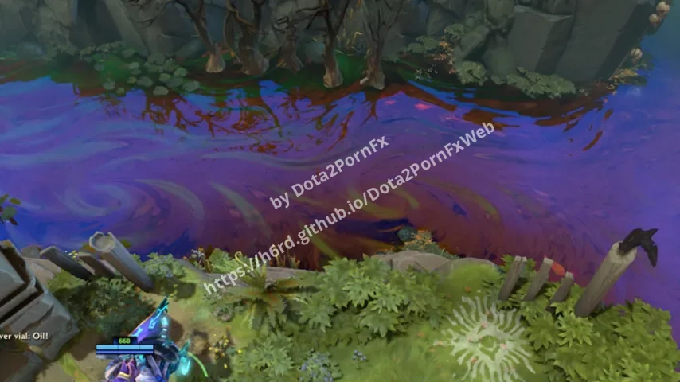
Oil River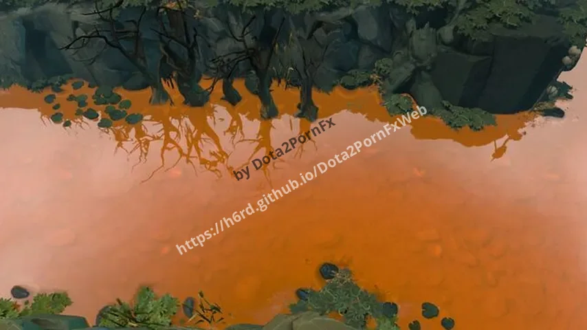
Orange River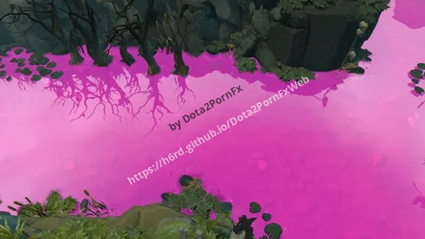
Pink River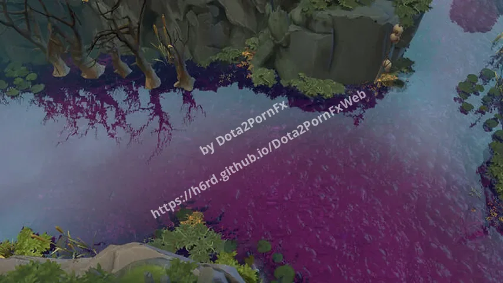
Potion River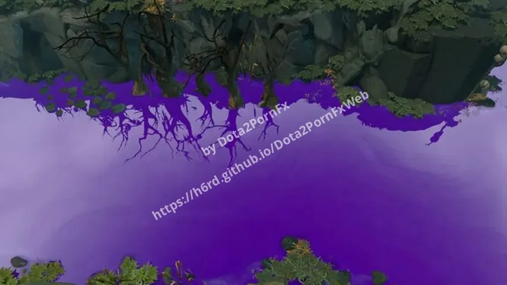
Purple River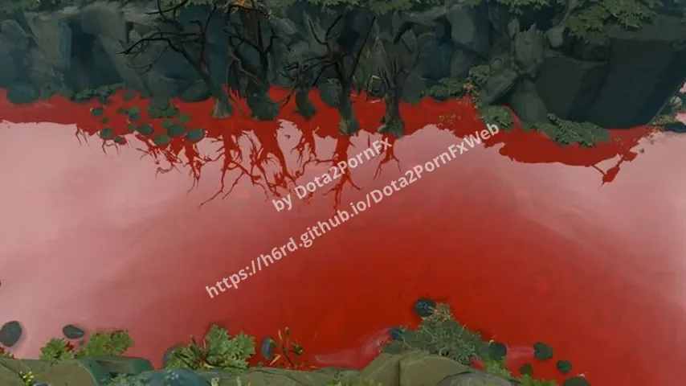
Red River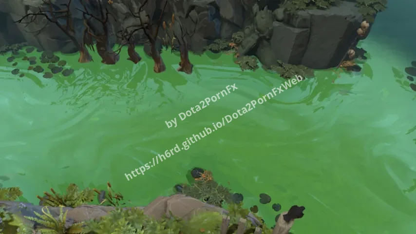
Slime River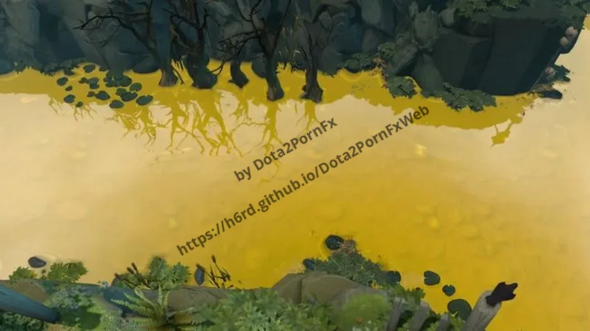
Yellow River Purple Electric River
Purple Electric River Acid Electric River
Acid Electric River